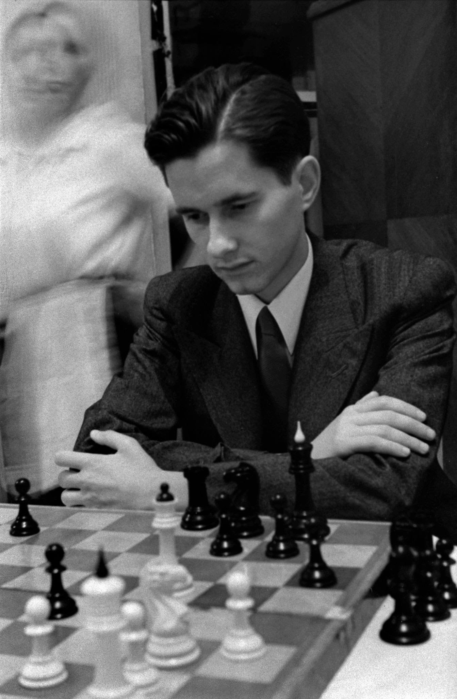

Paul Keres
Paul Keres (1916 - 1975) oli Eesti malesuurmeister ja malekirjanik.
Keres on Eesti spordi suurkuju, kelle tähtsus ja tähendus ulatuvad üle malemängu piiride.
Tunnustus
- 1959, 1962 - Eesti aasta sportlane
- 1964 - Kalevi auliige
- 1965 - Eesti NSV teeneline sporditegelane